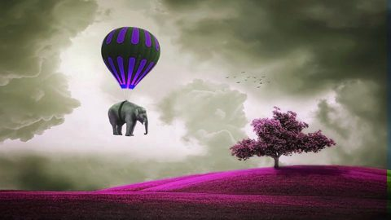
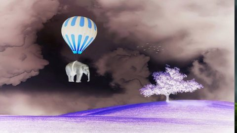
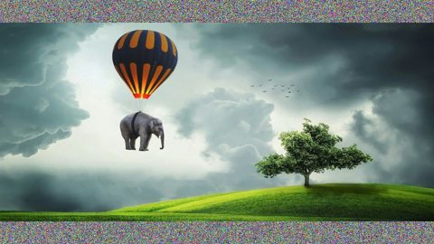

Réservé à l’enseignant
Correction – Compression et traitement d’image
A1 Question 1 – Pourquoi compresser une image ?
Une image brute (RAW) est très lourde. La compresser permet de réduire le poids du fichier : on économise de la place de stockage (carte mémoire, disque, cloud) et l’image est plus rapide à transférer, à envoyer ou à afficher sur le Web.
En contrepartie, le format JPEG perd une partie de l’information : le RAW conserve toutes les données du capteur et permet de retoucher davantage, mais il est lourd et demande un logiciel de développement.
A2 Question 2 – Trois modifications subies par une image compressée
Réponses possibles (compression avec perte, comme le JPEG) :
- Réduire le nombre de couleurs : on remplace des nuances très proches par une seule (le GIF est limité à 256 couleurs).
- Supprimer des détails peu visibles pour l’œil : on regroupe des pixels voisins presque identiques (JPEG : l’image est découpée en blocs de 8 × 8 pixels).
- Réduire la définition de l’image (moins de pixels) ou la qualité de l’enregistrement.
Une compression sans perte (PNG, TIFF avec compression) code autrement les données répétées, sans rien perdre : le gain de poids est plus faible.
B1 Question 1 – Programmes 1 et 2
- Programme 1 : deux boucles imbriquées parcourent les pixels de l’image (ligne par ligne,
ypuisx). Pour chaque pixel,getpixel((x,y))renvoie son code RVB (r,v,b), qui est affiché. Il affiche 950 × 540 = 513 000 lignes, puis « fin ». - Programme 2 : pour chaque pixel, on lit
r,v,bpuis on les permute : le nouveau rouge est l’ancien vert, le nouveau vert est l’ancien bleu, le nouveau bleu est l’ancien rouge.putpixelécrit le nouveau code. Les couleurs de l’image changent (ciel et herbe prennent d’autres teintes).

B2 Question 2 – Programme 3 (négatif)
Pour chaque pixel, on remplace chaque composante par 255 moins sa valeur : (r, v, b) devient (255 − r, 255 − v, 255 − b). On obtient le négatif de l’image : une zone sombre devient claire, un pixel (24, 31, 37) devient (231, 224, 218).

B3 Question 3 – Programme 4 (noir et blanc)
On calcule un niveau de gris pour chaque pixel avec une moyenne pondérée : 0,2125 × r + 0,7154 × v + 0,0721 × b. Le vert pèse le plus, car l’œil humain y est le plus sensible ; le bleu pèse le moins. On donne ensuite cette même valeur aux trois composantes : (gris, gris, gris), ce qui donne une image en niveaux de gris.
B4 Question 4 – La partie non traitée
L’image mesure 960 × 540 pixels, mais les programmes déclarent largeur_image=950 : les boucles ne parcourent que les colonnes 0 à 949. Les 10 dernières colonnes (x de 950 à 959) ne sont pas traitées : on voit une bande non modifiée sur le bord droit de l’image.
Correction : remplacer largeur_image=950 par largeur_image=960. Mieux, laisser Python lire la taille de l’image :
largeur_image, hauteur_image = img.sizeC Question 5 – Photomontage
Réponse libre. Avec GIMP : on place et on ajuste l’image à la souris, avec un aperçu immédiat et de nombreux outils (calques, retouche) ; mais il faut recommencer à la main. Avec le programme : le résultat est reproductible et automatisable (même position à chaque exécution), mais il faut tâtonner sur les coordonnées et la taille.
+ Question 6 – Du bruit aléatoire
Dans random_bandes.py, la première boucle bruite les lignes 0 à 49 (haut de l’image), la seconde les lignes 490 à 539 (bas). Changer hauteur_image change l’épaisseur de la bande du haut ; changer range(490,540) change celle de la bande du bas.

Tu n’avais pas fourni de corrigé pour la partie 2 : cette correction est une proposition à relire. Je n’ai pas pu consulter la fiche technique de Philippe Balladur : les réponses A1 et A2 sont générales. Les captures des programmes sont celles de leur exécution réelle.